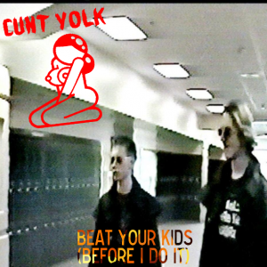

Cunt Yolk

Cunt Yolk is a so-called "meme metal" band that are located in Europe. The band is mostly made up of one person; hosma, with added help from OwlMan, and Capy. Cunt Yolk songs deal with taboo subjects such as fetish ("Daddy's Cummies"), masturbation ("Universal"), child abuse ("Beat Your Kids (Before I Do It)"), and cults ("The Crazy Cunt (ft. Clive Python)").
So far the band have only got one EP out, 2018's "Beat Your Kids (Before I Do It)", the EP is available under the Creative Commons license, CC BY-NC-SA 4.0 and since its release, has become a cult hit.
Tracks of Beat Your Kids (Before I Do It)
Beat Your Kids (Before I Do It)
This is the first track of the EP, the song is about how the singer is always annoyed by unruly children and how he want the parents to beat their children so that they won't make a lot of noise, if they don't beat them, then he'll do it himself.
The cover for this song is a still from "Hitman for Hire", a video made by Eric Harris and Dylan Klebold from their so-called "Basement Tapes". Harris and Klebold were the two young men who committed the 1999 Columbine High School massacre, killing 15 (including both perpetrators). This song is unique as it has two covers -- cover one has the Cunt Yolk nude lady logo on, and the second one does not. This was made so YouTube would not remove the song for having nudity in the video.
The Crazy Cunt (ft. Clive Python)
This is the second song on the EP, the song is a parody of The Crazy Frog, though in this he song is referred to as "The Crazy Cunt". The song is about how the Crazy Cunt is going to take away your life.
Unlike the rest of the songs on this EP, the lyrics were co-written by OwlMan, who also provides their voice at the start of the track.
On the Genius page for the song, Cunt Yolk writes that the song is about "the one and only Crazy Frog, which Clive [Python] usually refers to as 'The Crazy Cunt'".
Universal
This is the second to last track on the EP. This song's main theme is about how the singer can masturbate to just about anything he desires, some things named that he can masturbate to are gore, gay porn and the "Euphoria" hentai series. The singer also says that he's dedicated his life to "mastering masturbating", and that he enjoys to drink his own sperm.
The cover for the song has an Easter egg in the form of the sign the blond man is holding on the cover. The sign uses the Standard Galactic Alphabet from Commander Keen, in the Standard Galactic Alphabet the sign says "Fuck you - Owl".
Daddy's Cummies
The final song of this EP is a cover of the copypasta "Daddy's Cummies" that is about how a girl wants to perform oral sex on her boyfriend whom she calls "daddy" as they partake in the fetish known as GGLG so that she can have his "cummies".
References
- Original wiki article about this subject
- Cunt Yolk's music can be found on Bandcamp, YouTube, Soundcloud, and The Internet Archive.
- The Cunt Yolk website